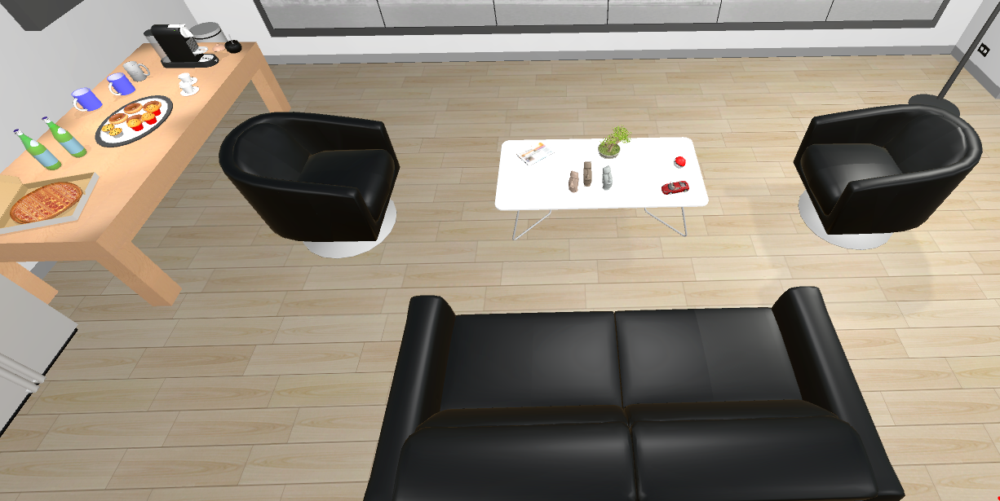
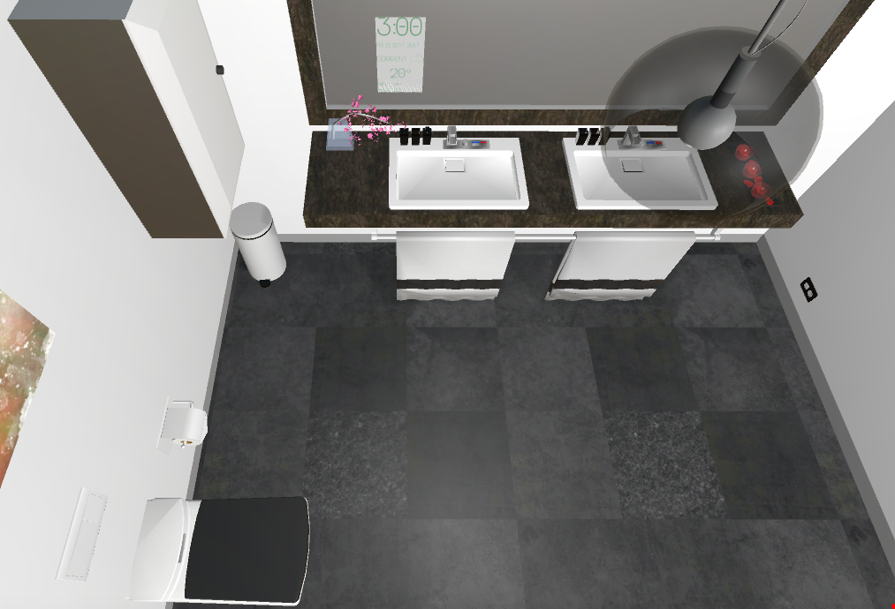

Project 1 Reflections
For this homework, I downloaded the projects of two other groups (Group 3 and Group 9) I liked and wrote about the aspects of the projects that I thought were good/interesting.
Group 3
Use of the lack of gravity
Group 3 made skillful use of the ‘no gravity’ option in Unity. They used this option to simulate a hovering drone in the room, which is a perfect fit for it. Also the rotating blades and additional interactions to move it around made the drone seem more real.
Attention to detail
The look and feel of the entire room gave the impression that the room is real and the main reason for that is the attention to detail. Here are some of the features that demonstrate this:
+ They used different weights for different objects in the room and this made the movement of those objects feel natural. For example, the ball had less weight and a little bounce which made it move easily and bounce around; the chair had more weight which made it move slower. These small changes resulted in the VR objects’ movements better resemble their actual movements in reality.
+ Use of seemingly insignificant things like thermostat, air vents and power outlets to give a natural feel to the room.
+ Complete and logical setup: They divided the room into different sections (play area, working area etc.,) that make sense logically – for instance they have the table with the food and the relaxing area with the couch together on one side of the room – if they had them on the opposite ends of the room, it wouldn’t have made as much sense.

Also, they had multiple switches to adjust/change the lighting. The position of the switches was logical too – the switch near the SAGE2 screen controls the light near the screen and so on. Also the setup of each section felt complete. For example, the working area for each person had a monitor, keyboard, mouse, paper, pen and similar objects that are common in a work place – if there had been a missing keyboard/mouse, the place wouldn’t have felt as believable/complete.
Use of subtle and appropriate sounds
The choice of the sounds and their volume is good. Instead of having loud background music, they opted for low volume. They made good use of the Doppler effect – for instance, the sound from the air vents decreases in volume when the user moves further away. Also, they made clever use of sounds to give the impression of reality – for example, just playing water sound on collision resulted in a special effect where it looks like the faucets in the restroom are motion activated.
Use of the neighboring spaces to the room
They used a small neighboring space to the room as a restroom. This is a good idea – instead of just wasting the adjacent space by not adding anything, they designed it to be a restroom. They had a complete and functional looking restroom with all the usual fixtures and a sign outside. It’s the same with the billiard room as well.

Group 9
Effective use of space
The space was effectively utilized – even though it is divided into multiple sections with walls, it doesn’t feel cluttered or full.
Functional models
There are many simple but functional models in the project of Group 9. I have listed them below:
+ Piano: The room had an instrument that kind of looks like a piano – it is really simple to make, but pressing each key on the piano plays a different note, the object might be plain but it functions exactly like an actual piano (I tried to play happy birthday and it works).
+ Jenga: The model of Jenga in the room works as well – the physics as well as the position of the colliders are precise enough that even the small Jenga pieces are stackable.
+ Table tennis with ping pong balls and rackets.
Use of sounds on collision
The ping pong balls make a sound when they collide with another object – this sound is really effective and when combined with the bounce of the ball, it gives the impression of reality.
Use of ceiling fixtures and adjustable lighting
The meeting room has lights that have adjustable brightness and the room also has a working fan in the ceiling that rotates.

© Sai Priya Jyothula. All rights reserved.